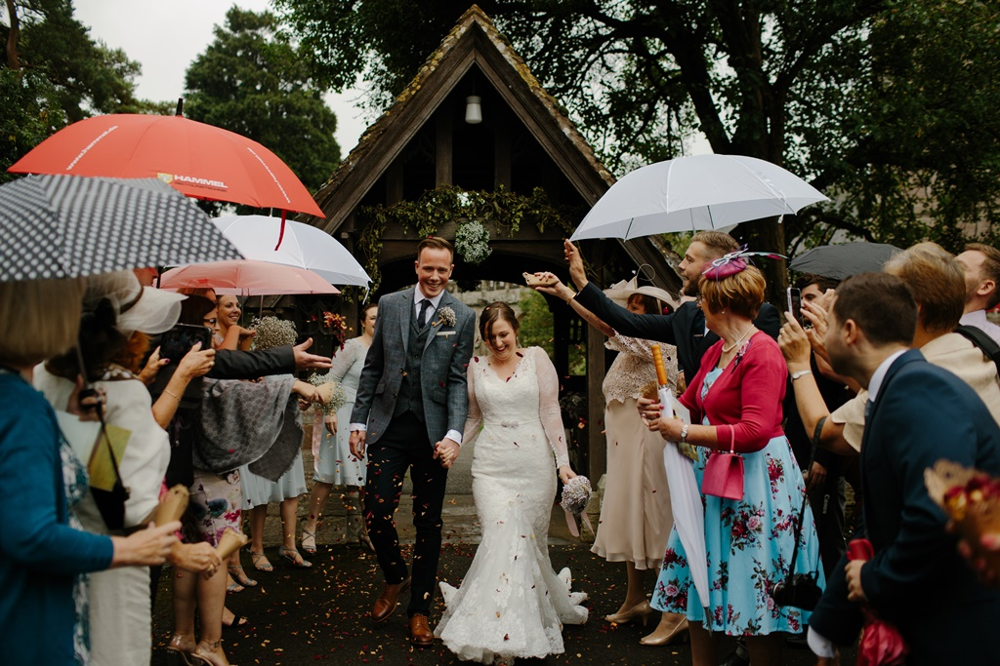

서준 Groom
유리 Bride
Let's get in touch
Location
- SUBWAY
7호선 학동역 (1번 출구)
- BUS
147, 463, 4211, 08
- ADDRESS
서울특별시 강남구 논현로 742 래팡
서울특별시 강남구 논현동 66-24
파티오나인 3층 프리미엄홀
Gallery
A good marriage is one which allows for change and growth in the individuals and in the way they express their love. There are six requisites in every happy marriage. The first is faith and remaining five are confidence.
